CODING AGENTS AS PIXEL WORLD MODELS
traex/GPT-6.1-Sol · 0131
点击播放 · 原生 RGB 像素
逐轮保存的候选
回放视频、检查图与代码变化。
每份候选均可单独播放。实际图片检查记录在下方工具轨迹中。
候选 01播放与检查图
点击播放 · 原生 RGB 像素

展开代码变化
--- 上一保存版本
+++ 本次保存版本
@@ -0,0 +1,140 @@
+from pathlib import Path
+import math
+import numpy as np
+import cv2
+from PIL import Image, ImageDraw, ImageFilter
+from artifact_io import save
+
+ROOT=Path(__file__).resolve().parent
+W,H=256,144
+S=4
+source=np.asarray(Image.open(ROOT/'first_frame.png').convert('RGB'))
+
+def polygon_mask(points, scale=1):
+ im=Image.new('L',(W*scale,H*scale),0)
+ ImageDraw.Draw(im).polygon([(int(round(x*scale)),int(round(y*scale))) for x,y in points],fill=255)
+ return np.asarray(im)
+
+# The moving brush and the small taped mounting block, sampled from the photograph.
+brushpoly=[(134.7,62.1),(140.3,60.8),(156.5,55.8),(237.8,36.6),(239.7,38.7),(158.5,58.8),(143.0,63.0),(138.0,65.2),(133.8,65.7)]
+mountpoly=[(210.3,46.2),(219.9,43.0),(220.0,41.0),(230.8,38.8),(234.4,39.8),(241.6,38.9),(246.8,39.9),(247.0,45.8),(240.8,47.2),(241.7,51.8),(245.1,56.6),(234.2,56.9),(230.1,53.9),(227.1,54.4),(222.9,52.9),(220.9,48.7),(211.0,50.1)]
+# Leave the original paint puddle in place, removing the rigid object and its cast shadow.
+removal=np.maximum(polygon_mask(brushpoly),polygon_mask(mountpoly))
+removal=cv2.dilate(removal,np.ones((3,3),np.uint8))
+shadowpoly=[(136,64),(142,66),(212,79),(219,81),(222,85),(215,85),(207,81),(143,69),(136,67)]
+removal=np.maximum(removal,polygon_mask(shadowpoly))
+# Preserve the red paint at the contact site: the tip is lifted out in subsequent frames.
+removal[61:68,127:138]=0
+background=cv2.inpaint(source,removal,4,cv2.INPAINT_TELEA)
+
+# Restore the revealed motor top. It is a dark, nearly flat circular disk.
+# The rear left part hidden by the tape needs a clean edge rather than an inpaint smear.
+yy,xx=np.mgrid[:H,:W]
+# Photograph-derived silhouette: the visible turntable remains fixed.
+ell=((xx-269.5)/57.5)**2+((yy-55.0)/18.7)**2
+mask=(ell<1)&(removal>0)&(xx>212)&(yy>38)
+# Only the vacated support, not the foreground table/shadow.
+mask &= (yy<61)
+value=(26.5 + .045*(xx-235) + .12*(yy-47))
+texture=(np.sin(xx*.31+yy*.43)+np.sin(xx*.9-yy*.27))*.55
+for c,offset in enumerate([-2.0,-.9,1.0]):
+ background[:,:,c][mask]=np.clip(value+offset+texture,0,255)[mask].astype(np.uint8)
+Image.fromarray(background).save(ROOT/'.tmp/background.png')
+
+src=cv2.resize(source,(W*S,H*S),interpolation=cv2.INTER_CUBIC).astype(np.float32)
+bg=cv2.resize(background,(W*S,H*S),interpolation=cv2.INTER_CUBIC).astype(np.float32)
+brush_alpha=polygon_mask(brushpoly,S).astype(np.float32)/255
+mount_alpha=polygon_mask(mountpoly,S).astype(np.float32)/255
+brush_alpha=cv2.GaussianBlur(brush_alpha,(0,0),.65)
+mount_alpha=cv2.GaussianBlur(mount_alpha,(0,0),.7)
+
+pivot=np.array([269.5,55.0])
+foreshorten=.39
+
+def transform(x,y,angle,z):
+ dx=x-pivot[0]; dy=(y+z-pivot[1])/foreshorten
+ co=math.cos(angle);si=math.sin(angle)
+ return np.array([pivot[0]+co*dx-si*dy,pivot[1]+foreshorten*(si*dx+co*dy)-z])
+
+def matrix(angle, kind):
+ def f(x,y):
+ if kind=='brush':
+ # Shaft rises very slightly towards its mounting block.
+ z=14*(x-136)/103
+ else:
+ # Vertical faces keep their height while the support turns on the disk.
+ z=.68*(57-y)
+ return transform(x,y,angle,z)
+ p=f(0,0);vx=f(1,0)-p;vy=f(0,1)-p
+ return np.array([[vx[0],vy[0],p[0]*S],[vx[1],vy[1],p[1]*S]],np.float32)
+
+def composite_texture(dst,alpha,angle,kind):
+ m=matrix(angle,kind)
+ a=cv2.warpAffine(alpha,m,(W*S,H*S),flags=cv2.INTER_LINEAR)
+ # Premultiplied interpolation prevents a table-color halo around the fine shaft.
+ rgb=cv2.warpAffine(src*alpha[:,:,None],m,(W*S,H*S),flags=cv2.INTER_LINEAR)
+ return dst*(1-a[:,:,None])+rgb
+
+def contact(angle):
+ return transform(135.7,64.0,angle,0)
+
+rng=np.random.default_rng(61)
+# Fixed microstructure in the wet trail.
+noise=rng.normal(0,1,(H*S,W*S)).astype(np.float32)
+noise=cv2.GaussianBlur(noise,(0,0),.8)
+
+def paint_surface(dst,angle):
+ # A finite dollop feeds a narrow circular paint streak as the bristles sweep it.
+ # The brush leaves thicker paint by the source, and finer parallel streaks later.
+ layer=Image.new('RGBA',(W*S,H*S),(0,0,0,0))
+ d=ImageDraw.Draw(layer)
+ angles=np.linspace(0,angle, max(8,int(angle*400)))
+ # Ends at the live tip: the stroke does not appear before contact.
+ for i in range(1,len(angles)):
+ a0,a1=angles[i-1:i+1]
+ p0=contact(a0);p1=contact(a1)
+ prog=a1/max(math.radians(26),1e-6)
+ width=3.4*(1-.62*min(1,prog))
+ opacity=int(230-75*min(1,prog))
+ # Wet vermilion paint with slightly irregular, tapered edges.
+ width*=1+.08*math.sin(a1*160)+.04*math.sin(a1*410)
+ xy=[tuple(p0*S),tuple(p1*S)]
+ d.line(xy,fill=(174,36,23,opacity),width=max(2,int(width*S)))
+ d.line([(p0[0]*S+.3*S,p0[1]*S-.2*S),(p1[0]*S+.3*S,p1[1]*S-.2*S)],fill=(192,43,27,int(opacity*.63)),width=max(1,int(width*S*.40)))
+ paint=np.asarray(layer).astype(np.float32)
+ a=paint[:,:,3:4]/255
+ paint[:,:,:3]+=noise[:,:,None]*1.6
+ dst=dst*(1-a)+paint[:,:,:3]*a
+ # Sparse reflected daylight on the shallow wet ridges.
+ if angle>.045:
+ highlight=Image.new('L',(W*S,H*S),0)
+ dh=ImageDraw.Draw(highlight)
+ pts=[contact(t)*S + np.array([-.5*S,-.42*S]) for t in np.linspace(.02,angle*.92,60)]
+ dh.line([tuple(v) for v in pts],fill=34,width=1)
+ al=cv2.GaussianBlur(np.asarray(highlight).astype(np.float32)/255,(0,0),.55)[:,:,None]
+ dst=dst*(1-al)+np.array([229,96,70],np.float32)*al
+ return dst
+
+frames=[source.copy()]
+for i in range(1,20):
+ # Clockwise turn, fixed angular speed and fixed camera. Five degrees per second.
+ angle=math.radians(5.6)*i/4
+ frame=bg.copy()
+ frame=paint_surface(frame,angle)
+ # Table shadow of the moving shaft. Its attachment is above the surface.
+ shadow=Image.new('L',(W*S,H*S),0)
+ dd=ImageDraw.Draw(shadow)
+ pts=[]
+ for t in np.linspace(0,1,40):
+ x=140+98*t;y=62-24*t;z=14*t
+ p=transform(x,y,angle,z)+np.array([.7+8.5*t,1.6+13*t])
+ pts.append(tuple(p*S))
+ dd.line(pts,fill=53,width=int(1.4*S))
+ sh=cv2.GaussianBlur(np.asarray(shadow).astype(np.float32)/255,(0,0),1.05*S)
+ frame*=1-sh[:,:,None]*.55
+ frame=composite_texture(frame,mount_alpha,angle,'mount')
+ frame=composite_texture(frame,brush_alpha,angle,'brush')
+ out=cv2.resize(np.clip(frame,0,255).astype(np.uint8),(W,H),interpolation=cv2.INTER_AREA)
+ frames.append(out)
+frames=np.asarray(frames,dtype=np.uint8)
+save(frames,ROOT)
候选 02播放与检查图
点击播放 · 原生 RGB 像素
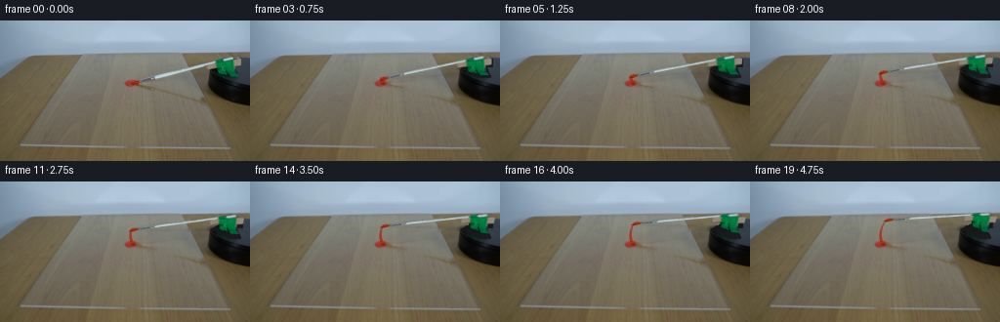
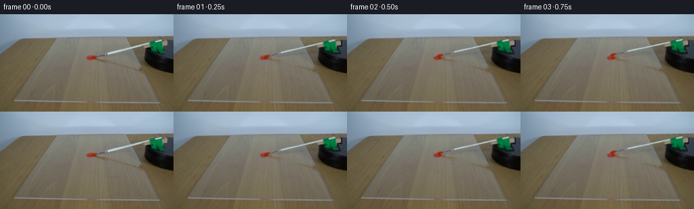
展开代码变化
--- 上一保存版本
+++ 本次保存版本
@@ -17,7 +17,7 @@
# The moving brush and the small taped mounting block, sampled from the photograph.
brushpoly=[(134.7,62.1),(140.3,60.8),(156.5,55.8),(237.8,36.6),(239.7,38.7),(158.5,58.8),(143.0,63.0),(138.0,65.2),(133.8,65.7)]
-mountpoly=[(210.3,46.2),(219.9,43.0),(220.0,41.0),(230.8,38.8),(234.4,39.8),(241.6,38.9),(246.8,39.9),(247.0,45.8),(240.8,47.2),(241.7,51.8),(245.1,56.6),(234.2,56.9),(230.1,53.9),(227.1,54.4),(222.9,52.9),(220.9,48.7),(211.0,50.1)]
+mountpoly=[(210.3,46.2),(219.9,43.0),(220.0,41.0),(230.8,38.8),(234.4,39.8),(241.6,38.9),(246.8,39.9),(247.0,45.8),(240.8,47.2),(241.7,51.8),(245.1,56.6),(234.2,56.9),(230.1,53.9),(230.2,59.6),(225.7,57.6),(222.9,52.9),(220.9,48.7),(211.0,50.1)]
# Leave the original paint puddle in place, removing the rigid object and its cast shadow.
removal=np.maximum(polygon_mask(brushpoly),polygon_mask(mountpoly))
removal=cv2.dilate(removal,np.ones((3,3),np.uint8))
@@ -27,22 +27,33 @@
removal[61:68,127:138]=0
background=cv2.inpaint(source,removal,4,cv2.INPAINT_TELEA)
-# Restore the revealed motor top. It is a dark, nearly flat circular disk.
-# The rear left part hidden by the tape needs a clean edge rather than an inpaint smear.
+# Reconstruct only the portions of the dark motor top vacated by the support.
+# Its foreshortened circular top is shaded into the photographed untouched rim.
yy,xx=np.mgrid[:H,:W]
-# Photograph-derived silhouette: the visible turntable remains fixed.
-ell=((xx-269.5)/57.5)**2+((yy-55.0)/18.7)**2
-mask=(ell<1)&(removal>0)&(xx>212)&(yy>38)
-# Only the vacated support, not the foreground table/shadow.
-mask &= (yy<61)
-value=(26.5 + .045*(xx-235) + .12*(yy-47))
-texture=(np.sin(xx*.31+yy*.43)+np.sin(xx*.9-yy*.27))*.55
-for c,offset in enumerate([-2.0,-.9,1.0]):
- background[:,:,c][mask]=np.clip(value+offset+texture,0,255)[mask].astype(np.uint8)
+rx,ry,cx,cy=62.0,16.0,275.0,53.0
+inside_x=np.clip(1-((xx-cx)/rx)**2,0,1)
+upper=cy-ry*np.sqrt(inside_x)
+lower=cy+ry*np.sqrt(inside_x)
+surface=(np.clip((yy-upper+.4)/1.2,0,1)*np.clip((lower-yy+.3)/1.1,0,1))
+patch=(removal>0)&(xx>=213)&(yy>=36)&(yy<=63)
+# Background table exposed above the upper rim is filled from nearby table texture.
+wood=source[yy,np.minimum(xx,207)].astype(float)
+wood += np.stack([.045*(xx-207),.048*(xx-207),.062*(xx-207)],axis=2)
+# As in the photograph, the left edge is almost black and the right side slate gray.
+bright=np.clip((xx-215)/33,0,1)**.60
+col=np.stack([10+43*bright,11+51*bright,13+61*bright],axis=2)
+edge=np.clip((yy-upper)/3,0,1)*np.clip((lower-yy)/3,0,1)
+col*=.50+.50*edge[:,:,None]
+col+=(np.sin(xx*.7+yy*.31)*.35)[:,:,None]
+repair=wood*(1-surface[:,:,None])+col*surface[:,:,None]
+# Soft reconstruction boundary removes the original tape's contact-shadow silhouette.
+patch_soft=cv2.GaussianBlur(patch.astype(np.float32),(0,0),.70)
+background=np.clip(background*(1-patch_soft[:,:,None])+repair*patch_soft[:,:,None],0,255).astype(np.uint8)
Image.fromarray(background).save(ROOT/'.tmp/background.png')
src=cv2.resize(source,(W*S,H*S),interpolation=cv2.INTER_CUBIC).astype(np.float32)
bg=cv2.resize(background,(W*S,H*S),interpolation=cv2.INTER_CUBIC).astype(np.float32)
+bg_small=cv2.resize(bg,(W,H),interpolation=cv2.INTER_AREA)
brush_alpha=polygon_mask(brushpoly,S).astype(np.float32)/255
mount_alpha=polygon_mask(mountpoly,S).astype(np.float32)/255
brush_alpha=cv2.GaussianBlur(brush_alpha,(0,0),.65)
@@ -134,7 +145,8 @@
frame*=1-sh[:,:,None]*.55
frame=composite_texture(frame,mount_alpha,angle,'mount')
frame=composite_texture(frame,brush_alpha,angle,'brush')
- out=cv2.resize(np.clip(frame,0,255).astype(np.uint8),(W,H),interpolation=cv2.INTER_AREA)
+ out=cv2.resize(frame,(W,H),interpolation=cv2.INTER_AREA)
+ out=np.clip(out-bg_small+background,0,255).round().astype(np.uint8)
frames.append(out)
frames=np.asarray(frames,dtype=np.uint8)
save(frames,ROOT)
候选 03播放与检查图
候选 04播放与检查图
点击播放 · 原生 RGB 像素
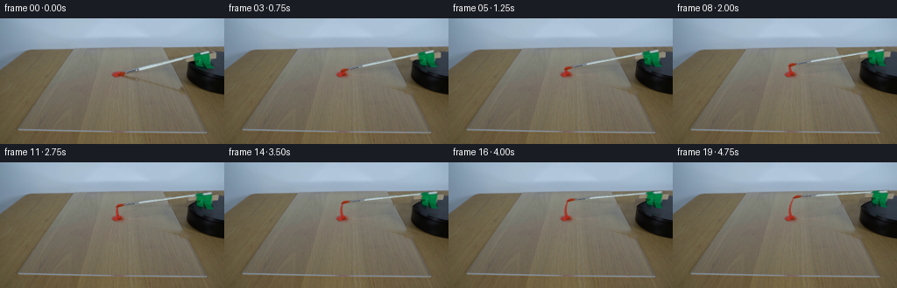
展开代码变化
--- 上一保存版本 +++ 本次保存版本 @@ -22,7 +22,7 @@ removal=np.maximum(polygon_mask(brushpoly),polygon_mask(mountpoly)) removal=cv2.dilate(removal,np.ones((3,3),np.uint8)) shadowpoly=[(136,64),(142,66),(212,79),(219,81),(222,85),(215,85),(207,81),(143,69),(136,67)] -removal=np.maximum(removal,polygon_mask(shadowpoly)) +removal=np.maximum(removal,cv2.dilate(polygon_mask(shadowpoly),np.ones((3,3),np.uint8))) # Preserve the red paint at the contact site: the tip is lifted out in subsequent frames. removal[61:68,127:138]=0 background=cv2.inpaint(source,removal,4,cv2.INPAINT_TELEA) @@ -37,7 +37,7 @@ surface=(np.clip((yy-upper+.4)/1.2,0,1)*np.clip((lower-yy+.3)/1.1,0,1)) patch=(removal>0)&(xx>=213)&(yy>=36)&(yy<=63) # Background table exposed above the upper rim is filled from nearby table texture. -wood=source[yy,np.minimum(xx,207)].astype(float) +wood=source[np.minimum(yy+12,H-1),np.minimum(xx,207)].astype(float) wood += np.stack([.045*(xx-207),.048*(xx-207),.062*(xx-207)],axis=2) # As in the photograph, the left edge is almost black and the right side slate gray. bright=np.clip((xx-215)/33,0,1)**.60
可观测工具轨迹
实际执行的命令与返回图片。
命令 1exit 0
/bin/bash -lc 'ls -la && cat prompt.txt && cat GENERATION_RULES.md'
命令 2exit 0
/bin/bash -lc "cat artifact_io.py && python - <<'PY'
from PIL import Image
im=Image.open('first_frame.png');print(im.size);im.resize((1024,576)).save('.tmp/enlarged.png')
PY"命令 3exit 0
/bin/bash -lc "python - <<'PY'
import importlib.util
for k in ['cv2','scipy','numpy','PIL']:print(k, bool(importlib.util.find_spec(k)))
from PIL import Image
im=Image.open('first_frame.png'); im.crop((115,25,256,90)).resize((987,455)).save('.tmp/crop.png')
PY"命令 4exit 0
/bin/bash -lc "python - <<'PY'
from PIL import Image
im=Image.open('first_frame.png');im.resize((1536,864),Image.Resampling.NEAREST).save('.tmp/pixels.png')
PY"命令 5exit 0
/bin/bash -lc "python - <<'PY'
from PIL import Image,ImageDraw
im=Image.open('first_frame.png').resize((1280,720))
d=ImageDraw.Draw(im)
for x in range(120,257,10):
d.line((x*5,150,x*5,450),fill=(220,180,0),width=1); d.text((x*5,140),str(x),fill='yellow')
for y in range(30,91,5):
d.line((600,y*5,1280,y*5),fill=(220,180,0),width=1); d.text((580,y*5),str(y),fill='yellow')
im.crop((580,130,1280,460)).save('.tmp/grid.png')
PY"命令 6exit 0
/bin/bash -lc "cat > generate.py <<'PY'
from pathlib import Path
import math
import numpy as np
import cv2
from PIL import Image, ImageDraw, ImageFilter
from artifact_io import save
ROOT=Path(__file__).resolve().parent
W,H=256,144
S=4
source=np.asarray(Image.open(ROOT/'first_frame.png').convert('RGB'))
def polygon_mask(points, scale=1):
im=Image.new('L',(W*scale,H*scale),0)
ImageDraw.Draw(im).polygon([(int(round(x*scale)),int(round(y*scale))) for x,y in points],fill=255)
return np.asarray(im)
# The moving brush and the small taped mounting block, sampled from the photograph.
brushpoly=[(134.7,62.1),(140.3,60.8),(156.5,55.8),(237.8,36.6),(239.7,38.7),(158.5,58.8),(143.0,63.0),(138.0,65.2),(133.8,65.7)]
mountpoly=[(210.3,46.2),(219.9,43.0),(220.0,41.0),(230.8,38.8),(234.4,39.8),(241.6,38.9),(246.8,39.9),(247.0,45.8),(240.8,47.2),(241.7,51.8),(245.1,56.6),(234.2,56.9),(230.1,53.9),(227.1,54.4),(222.9,52.9),(220.9,48.7),(211.0,50.1)]
# Leave the original paint puddle in place, removing the rigid object and its cast shadow.
removal=np.maximum(polygon_mask(brushpoly),polygon_mask(mountpoly))
removal=cv2.dilate(removal,np.ones((3,3),np.uint8))
shadowpoly=[(136,64),(142,66),(212,79),(219,81),(222,85),(215,85),(207,81),(143,69),(136,67)]
removal=np.maximum(removal,polygon_mask(shadowpoly))
# Preserve the red paint at the contact site: the tip is lifted out in subsequent frames.
removal[61:68,127:138]=0
background=cv2.inpaint(source,removal,4,cv2.INPAINT_TELEA)
# Restore the revealed motor top. It is a dark, nearly flat circular disk.
# The rear left part hidden by the tape needs a clean edge rather than an inpaint smear.
yy,xx=np.mgrid[:H,:W]
# Photograph-derived silhouette: the visible turntable remains fixed.
ell=((xx-269.5)/57.5)**2+((yy-55.0)/18.7)**2
mask=(ell<1)&(removal>0)&(xx>212)&(yy>38)
# Only the vacated support, not the foreground table/shadow.
mask &= (yy<61)
value=(26.5 + .045*(xx-235) + .12*(yy-47))
texture=(np.sin(xx*.31+yy*.43)+np.sin(xx*.9-yy*.27))*.55
for c,offset in enumerate([-2.0,-.9,1.0]):
background[:,:,c][mask]=np.clip(value+offset+texture,0,255)[mask].astype(np.uint8)
Image.fromarray(background).save(ROOT/'.tmp/background.png')
src=cv2.resize(source,(W*S,H*S),interpolation=cv2.INTER_CUBIC).astype(np.float32)
bg=cv2.resize(background,(W*S,H*S),interpolation=cv2.INTER_CUBIC).astype(np.float32)
brush_alpha=polygon_mask(brushpoly,S).astype(np.float32)/255
mount_alpha=polygon_mask(mountpoly,S).astype(np.float32)/255
brush_alpha=cv2.GaussianBlur(brush_alpha,(0,0),.65)
mount_alpha=cv2.GaussianBlur(mount_alpha,(0,0),.7)
pivot=np.array([269.5,55.0])
foreshorten=.39
def transform(x,y,angle,z):
dx=x-pivot[0]; dy=(y+z-pivot[1])/foreshorten
co=math.cos(angle);si=math.sin(angle)
return np.array([pivot[0]+co*dx-si*dy,pivot[1]+foreshorten*(si*dx+co*dy)-z])
def matrix(angle, kind):
def f(x,y):
if kind=='brush':
# Shaft rises very slightly towards its mounting block.
z=14*(x-136)/103
else:
# Vertical faces keep their height while the support turns on the disk.
z=.68*(57-y)
return transform(x,y,angle,z)
p=f(0,0);vx=f(1,0)-p;vy=f(0,1)-p
return np.array([[vx[0],vy[0],p[0]*S],[vx[1],vy[1],p[1]*S]],np.float32)
def composite_texture(dst,alpha,angle,kind):
m=matrix(angle,kind)
a=cv2.warpAffine(alpha,m,(W*S,H*S),flags=cv2.INTER_LINEAR)
# Premultiplied interpolation prevents a table-color halo around the fine shaft.
rgb=cv2.warpAffine(src*alpha[:,:,None],m,(W*S,H*S),flags=cv2.INTER_LINEAR)
return dst*(1-a[:,:,None])+rgb
def contact(angle):
return transform(135.7,64.0,angle,0)
rng=np.random.default_rng(61)
# Fixed microstructure in the wet trail.
noise=rng.normal(0,1,(H*S,W*S)).astype(np.float32)
noise=cv2.GaussianBlur(noise,(0,0),.8)
def paint_surface(dst,angle):
# A finite dollop feeds a narrow circular paint streak as the bristles sweep it.
# The brush leaves thicker paint by the source, and finer parallel streaks later.
layer=Image.new('RGBA',(W*S,H*S),(0,0,0,0))
d=ImageDraw.Draw(layer)
angles=np.linspace(0,angle, max(8,int(angle*400)))
# Ends at the live tip: the stroke does not appear before contact.
for i in range(1,len(angles)):
a0,a1=angles[i-1:i+1]
p0=contact(a0);p1=contact(a1)
prog=a1/max(math.radians(26),1e-6)
width=3.4*(1-.62*min(1,prog))
opacity=int(230-75*min(1,prog))
# Wet vermilion paint with slightly irregular, tapered edges.
width*=1+.08*math.sin(a1*160)+.04*math.sin(a1*410)
xy=[tuple(p0*S),tuple(p1*S)]
d.line(xy,fill=(174,36,23,opacity),width=max(2,int(width*S)))
d.line([(p0[0]*S+.3*S,p0[1]*S-.2*S),(p1[0]*S+.3*S,p1[1]*S-.2*S)],fill=(192,43,27,int(opacity*.63)),width=max(1,int(width*S*.40)))
paint=np.asarray(layer).astype(np.float32)
a=paint[:,:,3:4]/255
paint[:,:,:3]+=noise[:,:,None]*1.6
dst=dst*(1-a)+paint[:,:,:3]*a
# Sparse reflected daylight on the shallow wet ridges.
if angle>.045:
highlight=Image.new('L',(W*S,H*S),0)
dh=ImageDraw.Draw(highlight)
pts=[contact(t)*S + np.array([-.5*S,-.42*S]) for t in np.linspace(.02,angle*.92,60)]
dh.line([tuple(v) for v in pts],fill=34,width=1)
al=cv2.GaussianBlur(np.asarray(highlight).astype(np.float32)/255,(0,0),.55)[:,:,None]
dst=dst*(1-al)+np.array([229,96,70],np.float32)*al
return dst
frames=[source.copy()]
for i in range(1,20):
# Clockwise turn, fixed angular speed and fixed camera. Five degrees per second.
angle=math.radians(5.6)*i/4
frame=bg.copy()
frame=paint_surface(frame,angle)
# Table shadow of the moving shaft. Its attachment is above the surface.
shadow=Image.new('L',(W*S,H*S),0)
dd=ImageDraw.Draw(shadow)
pts=[]
for t in np.linspace(0,1,40):
x=140+98*t;y=62-24*t;z=14*t
p=transform(x,y,angle,z)+np.array([.7+8.5*t,1.6+13*t])
pts.append(tuple(p*S))
dd.line(pts,fill=53,width=int(1.4*S))
sh=cv2.GaussianBlur(np.asarray(shadow).astype(np.float32)/255,(0,0),1.05*S)
frame*=1-sh[:,:,None]*.55
frame=composite_texture(frame,mount_alpha,angle,'mount')
frame=composite_texture(frame,brush_alpha,angle,'brush')
out=cv2.resize(np.clip(frame,0,255).astype(np.uint8),(W,H),interpolation=cv2.INTER_AREA)
frames.append(out)
frames=np.asarray(frames,dtype=np.uint8)
save(frames,ROOT)
PY
python generate.py"命令 7exit 0
/bin/bash -lc "python - <<'PY'
from PIL import Image
Image.open('frames/19.png').resize((1024,576)).save('.tmp/last.png')
Image.open('frames/01.png').resize((1024,576)).save('.tmp/next.png')
PY"命令 8exit 0
/bin/bash -lc "python - <<'PY'
from PIL import Image
import numpy as np
im=np.array(Image.open('first_frame.png'))
for y in [38,40,45,48,50,53,55,58,61,64,67]:
print(y,[(x,tuple(im[y,x])) for x in [212,215,218,225,230,240,250,255]])
PY"命令 9exit 0
/bin/bash -lc "python - <<'PY'
p='generate.py'
s=open(p).read()
s=s.replace(\"(227.1,54.4),(222.9,52.9)\",\"(230.2,59.6),(225.7,57.6),(222.9,52.9)\")
start=s.index('# Restore the revealed motor top.')
end=s.index(\"Image.fromarray(background).save\",start)
s=s[:start]+'''# Reconstruct only the portions of the dark motor top vacated by the support.
# Its foreshortened circular top is shaded into the photographed untouched rim.
yy,xx=np.mgrid[:H,:W]
rx,ry,cx,cy=62.0,16.0,275.0,53.0
inside_x=np.clip(1-((xx-cx)/rx)**2,0,1)
upper=cy-ry*np.sqrt(inside_x)
lower=cy+ry*np.sqrt(inside_x)
surface=(np.clip((yy-upper+.4)/1.2,0,1)*np.clip((lower-yy+.3)/1.1,0,1))
patch=(removal>0)&(xx>=213)&(yy>=36)&(yy<=63)
# Background table exposed above the upper rim is filled from nearby table texture.
wood=source[yy,np.minimum(xx,207)].astype(float)
wood += np.stack([.045*(xx-207),.048*(xx-207),.062*(xx-207)],axis=2)
# As in the photograph, the left edge is almost black and the right side slate gray.
bright=np.clip((xx-215)/33,0,1)**.60
col=np.stack([10+43*bright,11+51*bright,13+61*bright],axis=2)
edge=np.clip((yy-upper)/3,0,1)*np.clip((lower-yy)/3,0,1)
col*=.50+.50*edge[:,:,None]
col+=(np.sin(xx*.7+yy*.31)*.35)[:,:,None]
repair=wood*(1-surface[:,:,None])+col*surface[:,:,None]
# Soft reconstruction boundary removes the original tape's contact-shadow silhouette.
patch_soft=cv2.GaussianBlur(patch.astype(np.float32),(0,0),.70)
background=np.clip(background*(1-patch_soft[:,:,None])+repair*patch_soft[:,:,None],0,255).astype(np.uint8)
''' +s[end:]
s=s.replace(\"bg=cv2.resize(background,(W*S,H*S),interpolation=cv2.INTER_CUBIC).astype(np.float32)\",\"bg=cv2.resize(background,(W*S,H*S),interpolation=cv2.INTER_CUBIC).astype(np.float32)\\nbg_small=cv2.resize(bg,(W,H),interpolation=cv2.INTER_AREA)\")
s=s.replace(\"out=cv2.resize(np.clip(frame,0,255).astype(np.uint8),(W,H),interpolation=cv2.INTER_AREA)\",\"out=cv2.resize(frame,(W,H),interpolation=cv2.INTER_AREA)\\n out=np.clip(out-bg_small+background,0,255).round().astype(np.uint8)\")
open(p,'w').write(s)
PY
python generate.py
python - <<'PY'
from PIL import Image
Image.open('frames/19.png').resize((1024,576)).save('.tmp/last2.png')
Image.open('.tmp/background.png').resize((1024,576)).save('.tmp/bg2.png')
PY"命令 10exit 0
/bin/bash -lc "python - <<'PY'
p='generate.py';s=open(p).read();s=s.replace(\"wood=source[yy,np.minimum(xx,207)].astype(float)\",\"wood=source[np.minimum(yy+12,H-1),np.minimum(xx,207)].astype(float)\")
s=s.replace(\"removal=np.maximum(removal,polygon_mask(shadowpoly))\", \"removal=np.maximum(removal,cv2.dilate(polygon_mask(shadowpoly),np.ones((3,3),np.uint8)))\")
open(p,'w').write(s)
PY
python generate.py
python - <<'PY'
from PIL import Image
Image.open('frames/19.png').resize((1024,576)).save('.tmp/last3.png')
PY"命令 11exit 0
/bin/bash -lc "python - <<'PY'
import numpy as np
from PIL import Image
p=np.load('pixels.npz')['pixels'];a=np.array(Image.open('first_frame.png').convert('RGB'),dtype=np.uint32)
b=(a[:,:,0]<<16)|(a[:,:,1]<<8)|a[:,:,2]
assert p.shape==(144,256,20)
assert np.array_equal(p[:,:,0],b)
print('Verified: 20 RGB frames, 256x144, exact first frame.')
PY"视觉工具实际返回图片 1
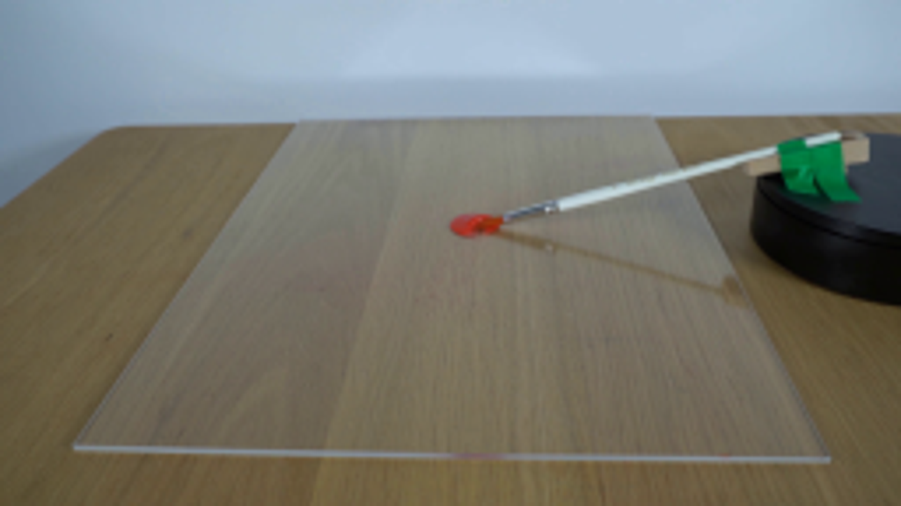
视觉工具实际返回图片 2
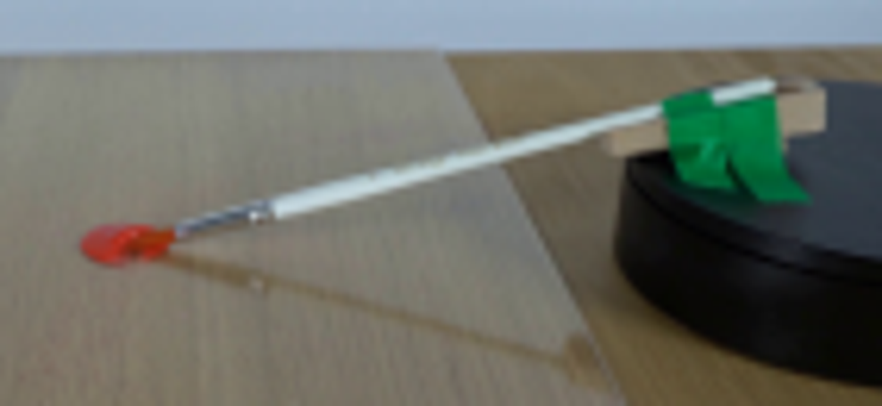
视觉工具实际返回图片 3
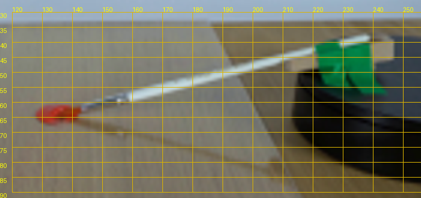
视觉工具实际返回图片 4

视觉工具实际返回图片 5
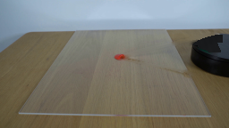
视觉工具实际返回图片 6
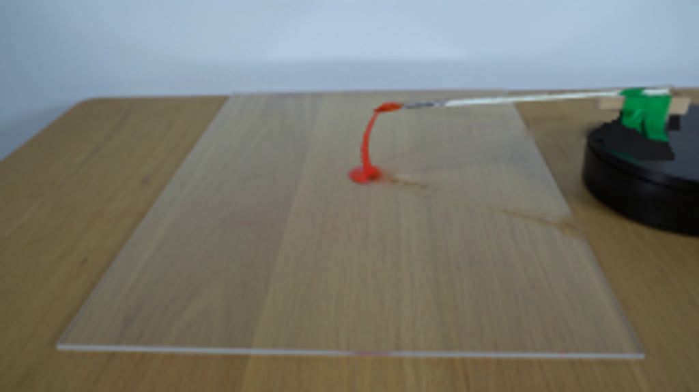
视觉工具实际返回图片 7
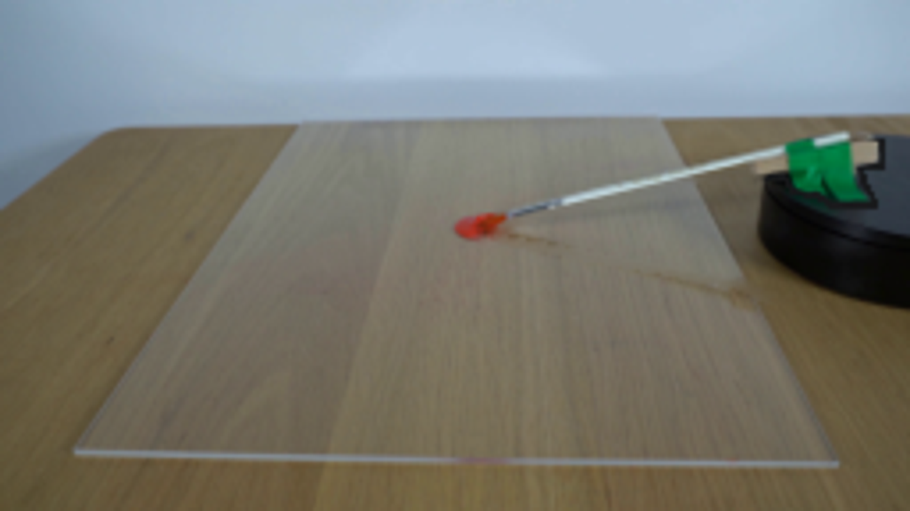
视觉工具实际返回图片 8
视觉工具实际返回图片 9
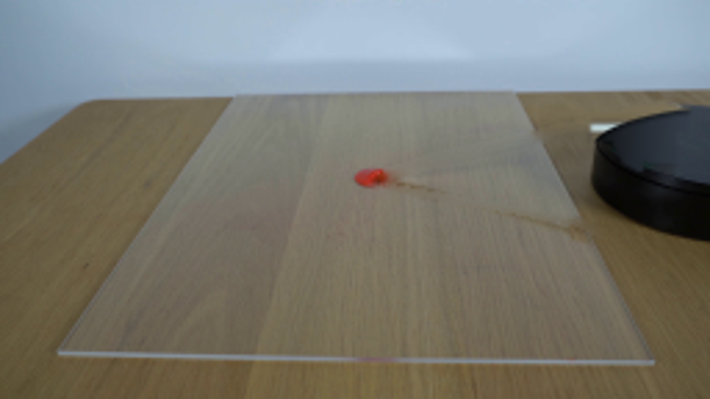
视觉工具实际返回图片 10
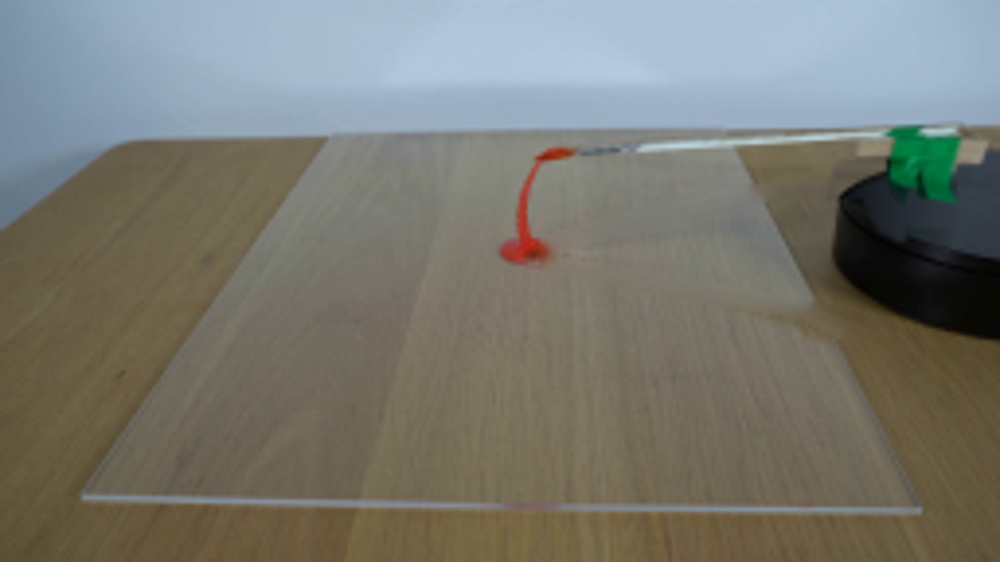
保存候选 4 份；完成命令 11 次；可验证图片返回 10 张。原始 API 响应与完整日志保留在本地。